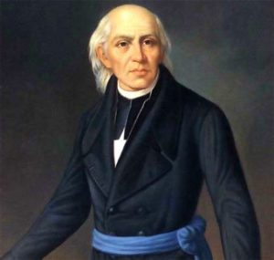
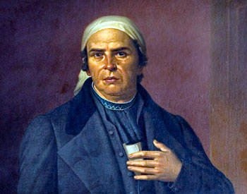
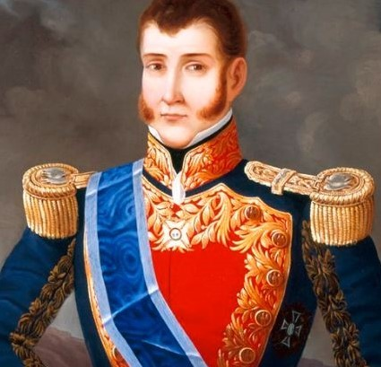
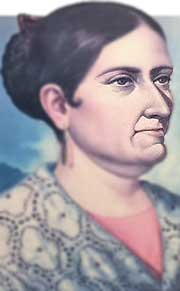
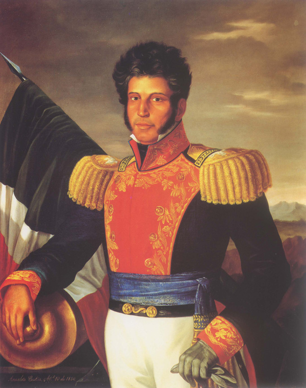

📖 BIOGRAFÍAS 📖
⭐ MIGUEL HIDALGO ⭐

Nació el 8 de mayo de 1753 en la hacienda de San Diego de Corralejo, Pénjamo, Guanajuato. Cursó estudios en el Colegio de San Nicolás, Valladolid (actual Morelia), del que llegó a ser rector. En 1778, fue ordenado sacerdote y en 1803 se hizo cargo de la parroquia de Dolores, Guanajuato.
Se preocupó por mejorar las condiciones de sus feligreses, casi todos indígenas, enseñándoles a cultivar viñedos, la cría de abejas y a dirigir pequeñas industrias de loza y ladrillos.
En 1809 se unió a una sociedad secreta formada en Valladolid, cuyo fin era reunir un congreso para gobernar la Nueva España en nombre del rey Fernando VII, preso de Napoleón y, en su caso, obtener la independencia del país.
Descubiertos los conjurados, la insurrección se trasladó a Querétaro donde se reunió con Ignacio Allende. El 16 de septiembre de 1810, llevando como estandarte a la virgen de Guadalupe, lanzó el llamado grito de Dolores que inició la gesta independentista y, acompañado de Allende, consiguió reunir un ejército formado por más de cuarenta mil personas. Tomaron Guanajuato y Guadalajara, sin embargo, decidieron no ocupar la ciudad de México.
⭐ JOSÉ MARIA MORELOS Y PAVÓN ⭐

José María Morelos nació en Valladolid (Michoacán) el 30 de setiembre de 1765. Sus padres fueron José Manuel Morelos y Juana Pérez-Pavón.
Estudió en el Seminario de Valladolid y se graduó en Artes en la Real y Pontificia Universidad de México. Desde 1798 fue cura de varios pueblos de Michoacán.
En 1810 se incorporó a las filas de Miguel Hidalgo, quien lo nombró jefe de los insurgentes del sur de México, y le encargó tomar Acapulco. Después de la muerte de Hidalgo (1811), Morelos conquistó la mayor parte del sur y centro del país. En 1812, tomó Oaxaca.
También organizó el Congreso de Anáhuac, que aprobó la Constitución Liberal de Apatzingán en 1814. Sin embargo, los criollos le negaron ayuda, y apoyaron la restauración absolutista del rey Fernando VII y la sanguinaria represión del virrey Félix María Calleja. Tras varios reveses militares, Morelos fue capturado en noviembre de 1815. Fue condenado por herejía y traición. Murió fusilado el 22 de diciembre de 1815.
⭐ AGUSTÍN DE ITURBIDE ⭐

Agustín de Iturbide nació en Valladolid (hoy Morelia) el 27 de septiembre de 1783 y murió en Padilla, Tamaulipas, el 19 de julio de 1824.
Fue el hijo criollo de un inmigrante vasco de ancestros nobles y de una dama michoacana. A los 17 años ingresó al regimiento de infantería provincial de su ciudad.
Luego, a los 22 años, Agustín de Iturbide se casó con Ana María de Huarte. Como la mayoría de los caudillos de la Independencia, sirvió primero al gobierno real español como oficial del ejército. Ahí adquirió la notoriedad por la persecución de los primeros rebeldes entre 1810 y 1816. En 1813 el virrey Félix María Calleja lo ascendió a coronel y le dio el mando del regimiento de Celaya. Tiempo después, Cedieron a Agustín de Iturbide el control militar supremo de la intendencia de Guanajuato, uno de los principales escenarios de la rebelión.
Ejerciendo esa responsabilidad, Agustín de Iturbide puso en práctica el programa realista de la contra-insurgencia.
Fue muy criticado por su arbitrariedad y por su trato a civiles, incluyendo la detención de madres, esposas e hijos de rebeldes conocidos. Además, por haber fusilado sin escrúpulos a quien se supone se lo merecía, según era costumbre entre ambos bandos.
⭐ JOSEFA ORTÍZ DE DOMINGUEZ ⭐

Esta heroína insurgente, nació el 8 de septiembre de 1768, en la ciudad de Valladolid, hoy Morelia. Se educó en el Colegio de San Ignacio de Loyola, conocido como Colegio de la Paz o de las Vizcaínas, de la Ciudad de México, plantel en el que se enseñaba a bordar, leer, escribir y contar.
En 1791 abandonó el colegio y contrajo matrimonio con el Licenciado Miguel Domínguez, quien al poco tiempo, fue nombrado Corregidor de Querétaro. Ambos tomaron parte en las juntas conspirativas en favor de la independencia del país, principalmente en Querétaro. El corregidor recibió órdenes de aprehender a los conspiradores, para lo cual, conociendo el carácter impetuoso de su mujer, la encerró en su habitación. Ella se valió de todos los medios para comunicarse con uno de los simpatizantes del movimiento, quien, sin demora, se trasladó a San Miguel
el Grande y más tarde a Dolores, para comunicar al cura don Miguel Hidalgo y al Capitán Ignacio Allende, lo que sucedía en Querétaro. Debido a estas noticias, ambos caudillos decidieron iniciar allí mismo la guerra en favor de la independencia.
El virrey mandó aprehender a doña Josefa y, con grandes precauciones, la encerró, primero en el Convento de Santa Teresa la Antigua, de la Ciudad de México, y después en el de Santa Catalina de Siena. Una vez consumada la independencia, se negó a recibir cualquier recompensa por su contribución a la causa libertaria.
Falleció el 2 de marzo en 1829, en la completa pobreza. Sus restos fueron sepultados en el Convento de Santa Catalina, de donde fueron exhumados, con grandes honores, y trasladados a Querétaro, cuyo gobierno la declaró Benemérita del Estado.
⭐ VICENTE GERRERO ⭐

(Vicente Ramón Guerrero Saldaña; Tixtla, actual Guerrero, 1782 - Cuilapan, 1831) Militar y político mexicano. Entre los valerosos patriotas que se adhirieron al levantamiento independentista del cura Hidalgo (1810), la figura de Vicente Guerrero sobresale tanto por su firme lealtad y compromiso como por su incansable tenacidad: cuando José María Morelos fue capturado y ejecutado en 1815, Guerrero le sucedió como líder
del movimiento y continuó luchando por una causa que ya todo el mundo daba por perdida.
La decidida resistencia de Guerrero y circunstancias históricas favorables motivaron que en 1821 se sumase al movimiento independentista Agustín de Iturbide, antiguo realista que, con el apoyo de Guerrero, lanzó el programa político conocido como Plan de Iguala, reunió un victorioso ejército y dio finalmente la independencia a México. Fiel a su ideario liberal y republicano, Guerrero rechazó la posterior coronación de Iturbide como emperador y, tras su caída en 1823, apoyó al primer presidente de la nueva república, Guadalupe Victoria, al que sucedió en 1829.
La abolición de la esclavitud fue lo más destacado de un mandato que, desgraciadamente, apenas duró nueve meses. Le esperaba el triste destino que padecieron otros próceres de la independencia en aquellos años convulsos: víctima de las intrigas de Santa Anna y de su propio vicepresidente, Vicente Guerrero fue derrocado aquel mismo año y mezquinamente traicionado cuando intentaba recuperar el poder.